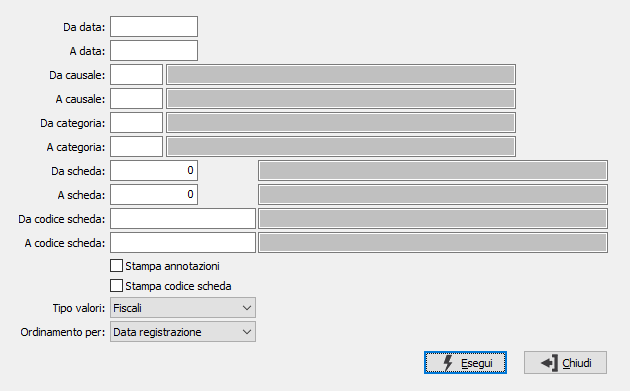

Lista movimenti
Il programma effettua la stampa di tutti i movimenti relativi a cespiti, sia generati tramite la prima nota contabile sia inseriti tramite il programma Gestione movimenti cespiti, nel periodo indicato, anche relativamente ad alcune causali cespiti o ad alcune categorie fiscali..
E’ possibile chiedere la stampa delle note inserite in fase di Immissione anagrafica cespiti. Confermando a vuoto vengono riportati in stampa tutti i movimenti presenti.

DA DATA: inserire il primo limite di data, da cui si desidera iniziare la stampa.
A DATA: inserire il secondo limite di data, con cui si desidera terminare la stampa.
DA CAUSALE: inserire la causale cespiti da cui si desidera iniziare la stampa. Sul campo sono attive le funzioni di ricerca (F9).
A CAUSALE: inserire la causale cespiti con cui si desidera terminare la stampa. Sul campo sono attive le funzioni di ricerca (F9).
DA CATEGORIA: inserire la categoria fiscale da cui si desidera iniziare la stampa. Sul campo sono attive le funzioni di ricerca (F9).
A CATEGORIA: inserire la categoria fiscale con cui si desidera terminare la stampa. Sul campo sono attive le funzioni di ricerca (F9).
DA SCHEDA: indica il numero del cespite con cui iniziare la stampa. Sul campo sono attive le funzioni di ricerca (F9). L'utilizzo del numero cespite annulla quello del codice e viceversa.
A SCHEDA: indica il numero del cespite con cui terminare la stampa. Sul campo sono attive le funzioni di ricerca (F9). L'utilizzo del numero cespite annulla quello del codice e viceversa.
DA CODICE SCHEDA: indica il codice del cespite con cui iniziare la stampa. Sul campo sono attive le funzioni di ricerca (F9). L'utilizzo del numero cespite annulla quello del codice e viceversa.
A CODICE SCHEDA: indica il codice del cespite con cui terminare la stampa. Sul campo sono attive le funzioni di ricerca (F9). L'utilizzo del numero cespite annulla quello del codice e viceversa.
STAMPA ANNOTAZIONI: definisce se stampare le note estese eventualmente presenti sul movimento (casella con segno di spunta).
STAMPA CODICE SCHEDA: definisce se stampare anche il codice alfanumerico della scheda (casella con segno di spunta).
TIPO VALORI: il campo è presente solo se attiva la gestione degli ammortamenti fiscali e definisce se stampare i valori fiscali o civilistici.
ORDINAMENTO PER: definisce il criterio di ordinamento dei dati in stampa: per data registrazione o per protocollo.